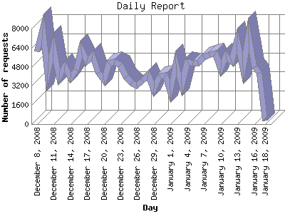

The Daily Report identifies the activity for each day within the reporting period. Remember that one page hit can result in several server requests as the images for each page are loaded.

| Day | Number of requests | Number of page requests | |
|---|---|---|---|
| 1. | January 18, 2009 | 286 | 17 |
| 2. | January 17, 2009 | 4,295 | 523 |
| 3. | January 16, 2009 | 4,759 | 503 |
| 4. | January 15, 2009 | 7,437 | 672 |
| 5. | January 14, 2009 | 4,647 | 558 |
| 6. | January 13, 2009 | 6,972 | 689 |
| 7. | January 12, 2009 | 5,267 | 323 |
| 8. | January 11, 2009 | 5,724 | 448 |
| 9. | January 10, 2009 | 4,663 | 391 |
| 10. | January 9, 2009 | 5,928 | 624 |
| 11. | January 8, 2009 | 5,768 | 957 |
| 12. | January 7, 2009 | 5,583 | 611 |
| 13. | January 6, 2009 | 5,136 | 634 |
| 14. | January 5, 2009 | 5,143 | 392 |
| 15. | January 4, 2009 | 5,195 | 472 |
| 16. | January 3, 2009 | 3,265 | 369 |
| 17. | January 2, 2009 | 5,102 | 427 |
| 18. | January 1, 2009 | 2,717 | 328 |
| 19. | December 31, 2008 | 4,070 | 283 |
| 20. | December 30, 2008 | 3,983 | 425 |
| 21. | December 29, 2008 | 2,900 | 365 |
| 22. | December 28, 2008 | 4,117 | 331 |
| 23. | December 27, 2008 | 3,642 | 496 |
| 24. | December 26, 2008 | 3,245 | 430 |
| 25. | December 25, 2008 | 3,459 | 358 |
| 26. | December 24, 2008 | 3,969 | 587 |
| 27. | December 23, 2008 | 4,961 | 501 |
| 28. | December 22, 2008 | 5,210 | 424 |
| 29. | December 21, 2008 | 5,048 | 506 |
| 30. | December 20, 2008 | 3,713 | 429 |
| 31. | December 19, 2008 | 4,319 | 409 |
| 32. | December 18, 2008 | 5,744 | 758 |
| 33. | December 17, 2008 | 5,257 | 451 |
| 34. | December 16, 2008 | 6,276 | 601 |
| 35. | December 15, 2008 | 4,542 | 498 |
| 36. | December 14, 2008 | 3,864 | 437 |
| 37. | December 13, 2008 | 4,836 | 354 |
| 38. | December 12, 2008 | 3,943 | 472 |
| 39. | December 11, 2008 | 6,427 | 512 |
| 40. | December 10, 2008 | 4,222 | 340 |
| 41. | December 9, 2008 | 7,929 | 551 |
| 42. | December 8, 2008 | 6,109 | 411 |
Most active day October 23, 2005 : 2,110 pages sent.
Daily average: 462.023255813953 pages sent. 424.078 TB bytes served. 4643.53488372093 requests handled.
This report was generated on January 18, 2009 00:22.
Report time frame December 18, 2003 11:34 to January 18, 2009 00:20.